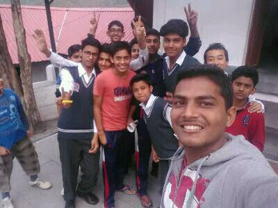

Dhruv Saidava
FAB LAB CEPT
About Me

Hey!
I am Dhruv Saidava, I am Civil Engineer and currently working as Technical Mentor in school, Teaching electronics to students in Rural India.
I like to explore and tinker with DIY kits for students. Currently I am working with few diffrently abled students to make them learn Arduino and CAD design so they can start tinkering and make something for themselves.